EDig이란?
EDig을 더 잘 사용하려면?

학습 자가진단
나는 잘 공부하고 있는 걸까?

학습전략 모아보기
공부를 더욱 효율적으로!
상담 신청
나를 위한 맞춤 도움이 필요하다면
EDig을 더 잘 사용하려면?
나는 잘 공부하고 있는 걸까?
공부를 더욱 효율적으로!
나를 위한 맞춤 도움이 필요하다면
누가 아직도 시험공부 시작 안함 ㅋㅋㅋ
집중 안돼서 울고 싶네;;
님들아 스트레스 받을 때 뭘로 해소하나요
이번 고3모고 국어 비문학 뭐임?
부모님이 학원 더 다니라고 강요합니다